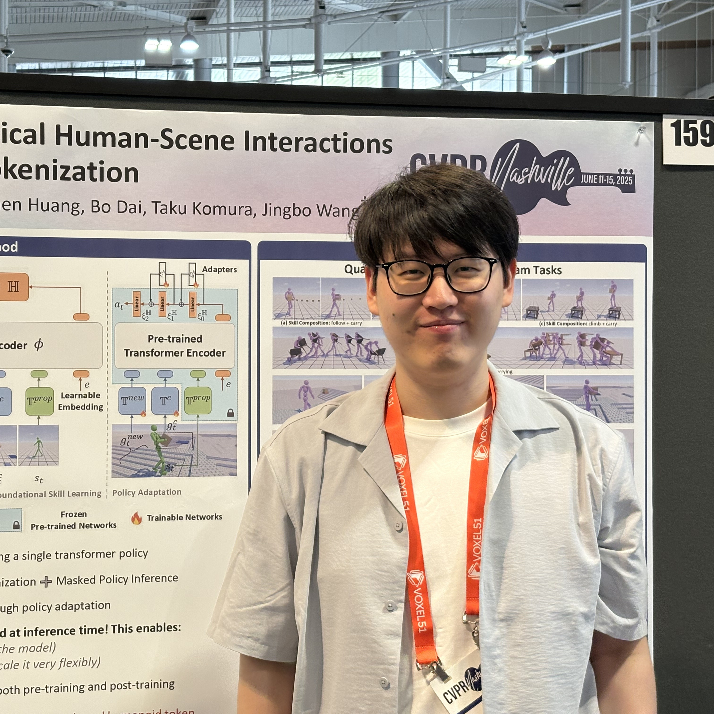
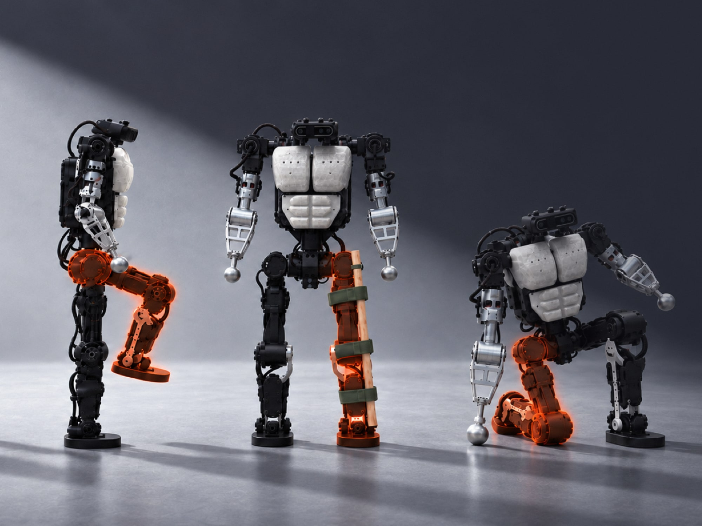

Liang Pan 潘亮
Second-year Ph.D. student (since Sept. 2025) Email: liangpan1005@163.com | WeChat: Puzzling123 |
 |
Biography
Interested in data, pre-training, and reinforcement learning for large foundation models.
Currently, I'm having fun scaling Physical AI at Light Origins.
Selected Projects (View all publications on Google Scholar)
* denotes equal contribution and † denotes the corresponding author2026
Light-O1: Scaling Whole-Body Intelligence with Human Action Pretraining
Light Origins Team
Tech Report, 2026
[Project Page]
[Code]
LightNav-0: Eliciting VLM Spatial Intelligence for Generalist Embodied Navigation Light Origins Team Tech Report, 2026 [Paper] [Project Page] [Code]

Light REACT: Building Resilient Whole-Body Intelligence for Scalable Deployment
Light Origins Team
Tech Report, 2026
[Project Page]
2025

TokenHSI: Unified Synthesis of Physical Human-Scene Interactions through Task Tokenization CVPR 2025 🏆️ Oral Presentation (Top 3.3%) The 1st Workshop on Humanoid Agents @ CVPR 2025 🌟 Spotlight 🏆️ Best Poster Award [Paper] [Project Page] [Code]